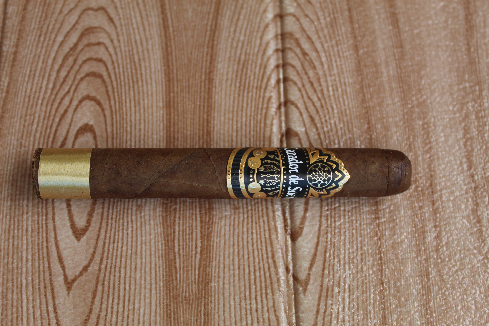
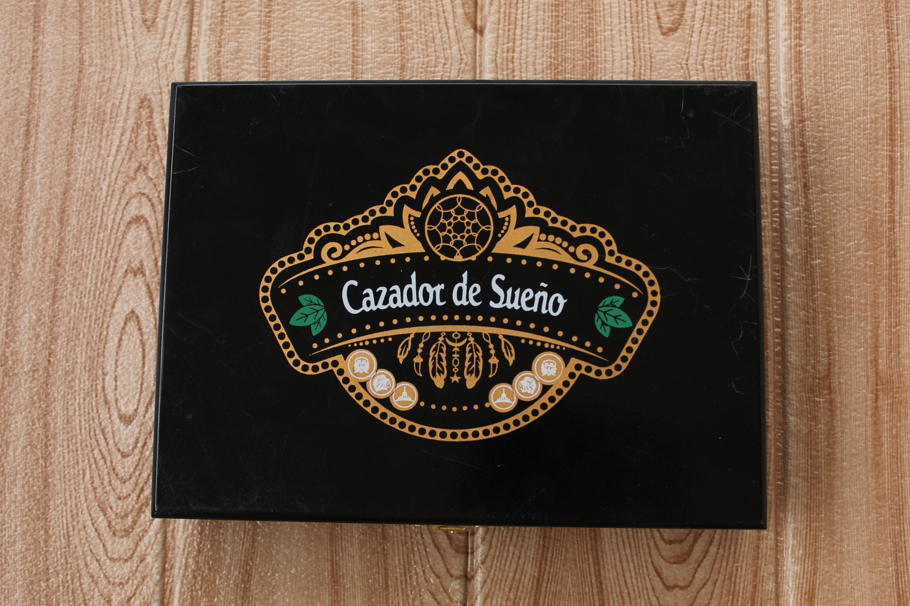

Formato / Vitola
Robusto 50 × 5″
Un formato clásico, cómodo en mano pero con una concentración de cuerpo y potencia extraordinaria.
Verificación de Edad
Este sitio contiene información sobre productos de tabaco reservados para mayores de edad. Confirme que tiene 21 años o más para continuar.
Al ingresar, usted confirma cumplir con la edad legal en su jurisdicción.
La corona del catálogo · Carácter del Cibao



Corto en formato, imponente en fortaleza. La riqueza tabacalera de nuestra tierra concentrada en un Robusto de impacto magistral.
La máxima expresión del carácter dominicano concentrada en un formato clásico. Un cigarro diseñado para quienes buscan una fumada intensa, compacta y repleta de matices tradicionales, complejos y sumamente profundos. Poco espacio, todo el poder del Cibao.
Robusto 50 × 5″
Un formato clásico, cómodo en mano pero con una concentración de cuerpo y potencia extraordinaria.
San Andrés
Aportando su característico color profundo, textura aceitosa y un sutil balance terroso.
Olor Dominicano
Aportando una base aromática rica y tradicional que amarra perfectamente la fuerza de la liga.
Selección Premium
Valle del Cibao — hojas de gran fortaleza que otorgan un carácter criollo único, profundo y con mucha evolución.
Fuerte
Intenso, con mucho cuerpo y un golpe de sabor imponente.
El Cibao y el Olor en su máxima expresión — tres actos de potencia concentrada, elegancia criolla y postgusto inolvidable.
El inicio es sumamente intenso y especiado. La pimienta negra impacta con franqueza, seguida de madera noble — roble y cedro — que establece un marco estructural de autoridad. La densidad del humo es notable desde la primera bocanada: espesa, cremosa, deliberada. Es el carácter fuerte de El Sultán en estado puro, con la rica procedencia de la tripa del Cibao manifestándose sin concesiones.
La fumada se estabiliza hacia una complejidad imponente. Emergen matices de café expreso y frutos secos tostados — almendra, avellana — sobre un fondo de cuero noble que da profundidad al perfil. La aromaticidad única del capote Olor Dominicano equilibra la potencia con maestría, manteniendo el registro robusto pero sumamente elegante. Es el corazón de la liga dominicana: fuerza domesticada por tradición aromática.
El final es denso, untuoso y de carácter criollo inolvidable. La fortaleza fuerte se despide en todo su esplendor con cacao oscuro y tierra seca, construyendo un clímax compacto y magistral. El postgusto es largo, persistente y muy limpio — la firma de un Robusto que no necesita longitud para dejar huella. Una fumada corta, pero de un impacto que corona el catálogo con dignidad imperial.
Consultas privadasEl Sultán no pide tiempo: exige atención. Es la sexta vitola, la última palabra y la más dominicana de la casa — el Cibao convertido en humo, en poder, en tradición.